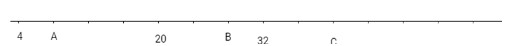
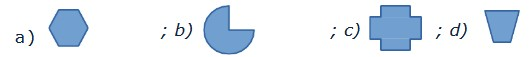

WG ZAGADNIEŃ
| Arytmetyka liczb naturalnych | status |
|---|---|
| Liczby naturalne na osi liczbowej, np. • Narysuj oś liczbową i zaznacz na niej liczby: 3, 12, 15, 24 • Jakie liczby kryją się pod literami A, B i C?  | |
| Zapisywanie liczb słowami i cyframi. Pojęcie system dziesiątkowy (zapis pozycyjny). Rzymski zapis cyfr do XXXIX, np. • Zapisz słowami liczbę 235 412; • Zapisz cyframi liczbę pięćdziesiąt dwa tysiące czterdzieści osiem; • Jaka jest cyfra setek w liczbie 7 248; • Zapisz liczbę 23 w systemie rzymskim lub zapisz liczbę XXXVIII w systemie dziesiętnym. | |
| Rachunki pamięciowe: dodawanie i odejmowanie niewielkich liczb, mnożenie i dzielenie liczby dwucyfrowej przez jednocyfrową, dzielenie z resztą, podnoszenie do potęgi drugiej i trzeciej | |
| Kolejność wykonywania działań, np. • 5 × 7 − 3 × 4 = ? • 5 × (7 − 3) × 4 = ? • 24 × 3 ÷ 12 + 5 = ? • Sześcioro dzieci państwa Kwiatkowskich dostało bombonierkę z 58 czekoladkami. Postanowiły podzielić się po równo, resztę zostawiając dla rodziców. Ile czekoladek otrzymali państwo Kwiatkowscy? • Na początku roku szkolnego pani Kwiatkowska zrobiła zakupy w sklepie papierniczym. Kupiła 25 zeszytów po 3zł, 12 długopisów po 2zł, 3 pudełka kredek po 7zł i 40 klejów po 2zł. Ile zapłaciła pani Kwiatkowska za te zakupy | |
| Pojęcie podzielności liczb i cechy podzielności przez 3, 9, 2, 5, i 10, np. • Co oznacza, że liczba jest podzielna przez inną liczbę? • Jaką cyfrę trzeba wpisać w miejsce * w liczbie 18*4, aby była podzielna przez 9? • Czy liczba 2675 jest podzielna przez liczbę 5? A czy jest podzielna przez liczbę 2? | |
| Rachunki pisemne: dodawanie, odejmowanie, mnożenie i dzielenie np. • Oblicz metodą pisemną: 3679 + 427 • 5621 − 478 • 1709 × 13 • 79470 : 6 | |
| Zegar i kalendarz, obliczenia zegarowe i kalendarzowe np. • Droga z domu do kościoła zajmuje Piotrkowi 17 minut. O której godzinie Piotrek wyszedł z domu, jeżeli dotarł do kościoła o godzinie 9:10? • Uczniowie wyjechali na wycieczkę w sobotę rano 28 września. Wrócili 5 października wieczorem. Ile dni trwał ten wyjazd? Którego dnia tygodnia wrócili? |
| Ułamki zwykłe | status |
|---|---|
| Pojęcie ułamka: ułamek jako część całości i jako iloraz. Liczby mieszane, ułamki właściwe i niewłaściwe. Porównywanie ułamków | |
| Skracanie i rozszerzanie ułamków, np. • Który z ułamków jest równy 2/3? a) 5/7 b) 6/10 c) 10/15 d) 1/2 | |
| Dodawanie i odejmowanie ułamków o tych samych mianownikach, np. • 5/7 + 5 i 3/7 = • 12 i 2/5 - 1 i 3/5 = | |
| Mnożenie ułamków zwykłych przez liczby naturalne, np. • 3/8 × 4 = • Piętnastoosobowy zastęp harcerzy urządza ognisko. Ile kiełbas należy zakupić, jeśli każdy harcerz zje 2/3 kiełbasy? |
| Ułamki dziesiętne | status |
|---|---|
| Pojęcie ułamka dziesiętnego. Zamiana ułamków dziesiętnych na zwykłe. | |
| Porównywanie ułamków dziesiętnych, np. • Która z liczb jest największa? a) 1,02 b) 1,20 c) 0,9786 d) 1,092 | |
| Dodawanie i odejmowanie ułamków dziesiętnych. Mnożenie ułamków dziesiętnych przez 10, 100, 1000 np. • Pani Kwiatkowska kupiła 10 batoników po 0,79 zł oraz 10 soczków po 1,23 zł, Zapłaciła banknotem 50 zł. Jaką resztę otrzymała? |
| Planimetria | status |
|---|---|
| Podstawowe pojęcia: prosta, odcinek, punkt. Wielokąt, okrąg, koło, np. • Która z poniższych figur nie jest wielokątem?  | |
| Mierzenie odległości i jednostki długości, np. • Zamień na centymetry: 5m 83cm | |
| Obwód wielokąta, np. • Pan Kowalski kupił prostokątną działkę o wymiarach 13m na 14m. Ile metrów płotu potrzebuje do ogrodzenia tej działki | |
| Mapa, plan i skala, np. • Na mapie w skali 1:400 000 odległość między dwoma miastami to 5 cm. Jaka jest odległość między tymi miastami w rzeczywistości? | |
| Pojęcie pola figury płaskiej. Jednostki pola. | |
| Obliczanie pola prostokąta, np. • Jeden z boków prostokąta ma długość 3 cm, a drugi jego bok jest 5 razy dłuższy. Oblicz pole tego prostokąta. | |
| Obliczanie pól różnych figur przy użyciu kratek. |
| Stereometria | status |
|---|---|
| Rozpoznawanie różnych brył np. • Dopasuj do obrazków podpisy: stożek, kula, prostopadłościan, ostrosłup | |
| Własności prostopadłościanu i sześcianu, np. • Opisz jak wygląda prostopadłościan (ile ma ścian i jakie to figury płaskie) • Opisz jak wygląda sześcian (ile ma ścian i krawędzi). |
WG PODRĘCZNIKA
| W świecie rachunków pamięciowych | status |
|---|---|
| Dodawanie pamięciowe | |
| Odejmowanie pamięciowe | |
| Mnożenie pamięciowe | |
| Dzielenie pamięciowe | |
| O ile więcej? O ile mniej? | |
| Ile razy więcej? Ile razy mniej? | |
| Dzielenie pamięciowe z resztą | |
| Potęgowanie | |
| Kolejność wykonywania działań | |
| Zadania tekstowe |
| W świecie liczb | status |
|---|---|
| Liczby wielocyfrowe | |
| Oś liczbowa | |
| Porównywanie liczb | |
| Jednostki długości | |
| Jednostki masy | |
| System rzymski | |
| Kalendarz i obliczenia kalendarzowe | |
| Zegar i obliczenia zegarowe |
| W świecie figur płaskich cz. 1 | status |
|---|---|
| Punkty, odcinki, proste i półproste | |
| Wzajemne położenie prostych i odcinków | |
| Mierzenie i rysowanie odcinków | |
| Mierzenie i rysowanie kątów | |
| Rodzaje kątów | |
| Prostokąty i kwadraty | |
| Wielokąty | |
| Obliczanie obwodu wielokąta |
| W świecie rachunków pisemnych | status |
|---|---|
| Dodawanie pisemne | |
| Odejmowanie pisemne | |
| Mnożenie pisemne przez liczbę jednocyfrową | |
| Dzielenie pisemne przez liczbę jednocyfrową | |
| Zadania tekstowe |
| W świecie figur płaskich cz. 2 | status |
|---|---|
| Koła i okręgi | |
| Oś symetrii figury | |
| Skala | |
| Skala na mapach i planach |
| W świecie ułamków zwykłych | status |
|---|---|
| Ułamki zwykłe | |
| Liczby mieszane | |
| Ułamek jako wynik dzielenia | |
| Ułamki właściwe i niewłaściwe | |
| Rozszerzanie i skracanie ułamków | |
| Porównywanie ułamków | |
| Dodawanie ułamków o jednakowych mianownikach | |
| Odejmowanie ułamków o jednakowych mianownikach |
| W świecie pól figur płaskich | status |
|---|---|
| Pole figury | |
| Jednostki pola | |
| Pole prostokąta | |
| Zamiana jednostek pola |
| W świecie ułamków dziesiętnych | status |
|---|---|
| Ułamki o mianownikach 10, 100, 1000... | |
| Porównywanie ułamków | |
| Ułamki dziesiętne i wyrażenia dwumianowane | |
| Dodawanie ułamków | |
| Odejmowanie ułamków | |
| Zadania tekstowe |
| W świecie figur przestrzennych | status |
|---|---|
| Figury przestrzenne | |
| Sześciany | |
| Prostopadłościany | |
| Siatki prostopadłościanów | |
| Pole powierzchni prostopadłościanu |